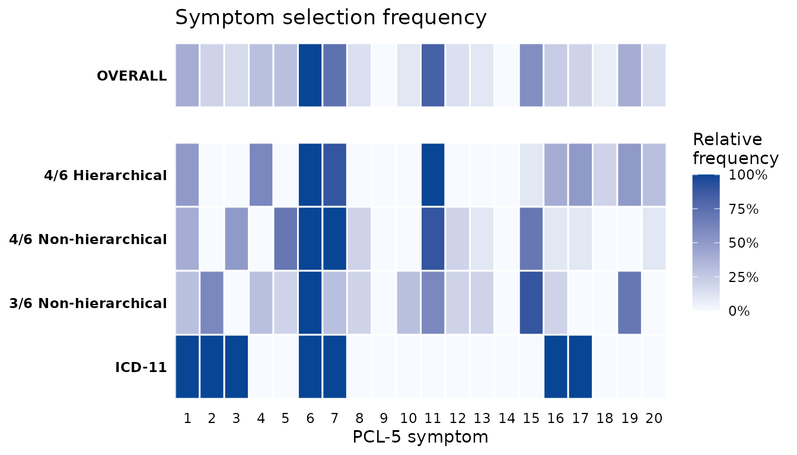

Multi-scenario optimization analysis
Source:vignettes/multi_scenario_analysis.Rmd
multi_scenario_analysis.RmdGoal
This vignette replicates the multi-scenario derivation workflow used in the PTSDdiag preprint in roughly twenty lines of code. Three optimization scenarios are compared on the same sample — 4-of-6 hierarchical, 4-of-6 non-hierarchical, and 3-of-6 non-hierarchical — and the results are summarised as a manuscript-ready table plus a symptom-selection heatmap that helps identify “core” symptoms recurring across the data-driven combinations.
Estimate all scenarios with one call
compare_optimizations() runs every scenario for you. By
default it uses the three preprint scenarios. Set
include_icd11 = TRUE to add ICD-11 as a benchmark fixed
criterion in the same comparison.
ptsd_data <- rename_ptsd_columns(simulated_ptsd[1:500, ])
comp <- compare_optimizations(
ptsd_data,
n_top = 10,
include_icd11 = TRUE,
show_progress = FALSE
)
print(comp)Manuscript Table 2
summarize_top_combinations() extracts the
per-combination performance metrics for each scenario in one tidy data
frame. Set as_percent = TRUE to present Sensitivity /
Specificity / PPV / NPV as percentages, and top_n to limit
the per-scenario rows shown in the manuscript table (the preprint uses
the top 5).
tbl <- summarize_top_combinations(comp, top_n = 5, as_percent = TRUE)
head(tbl, 12)
#> Approach Rank Combination TP FN FP TN Sensitivity
#> 1 4/6 Hierarchical 1 symptom_1_6_7_11_16_17 411 54 0 35 88.38710
#> 2 4/6 Hierarchical 2 symptom_1_6_7_11_16_19 411 54 1 34 88.38710
#> 3 4/6 Hierarchical 3 symptom_4_6_7_11_16_19 410 55 0 35 88.17204
#> 4 4/6 Hierarchical 4 symptom_1_6_7_11_15_17 409 56 0 35 87.95699
#> 5 4/6 Hierarchical 5 symptom_1_4_6_11_16_19 410 55 1 34 88.17204
#> 6 4/6 Non-hierarchical 1 symptom_1_3_6_7_11_15 460 5 8 27 98.92473
#> 7 4/6 Non-hierarchical 2 symptom_3_5_6_7_11_15 457 8 6 29 98.27957
#> 8 4/6 Non-hierarchical 3 symptom_5_6_7_11_15_16 456 9 5 30 98.06452
#> 9 4/6 Non-hierarchical 4 symptom_1_5_6_7_11_15 458 7 8 27 98.49462
#> 10 4/6 Non-hierarchical 5 symptom_3_5_6_7_12_15 457 8 7 28 98.27957
#> 11 3/6 Non-hierarchical 1 symptom_2_6_7_8_10_15 462 3 15 20 99.35484
#> 12 3/6 Non-hierarchical 2 symptom_4_6_11_15_16_19 465 0 18 17 100.00000
#> Specificity PPV NPV
#> 1 100.00000 100.00000 39.32584
#> 2 97.14286 99.75728 38.63636
#> 3 100.00000 100.00000 38.88889
#> 4 100.00000 100.00000 38.46154
#> 5 97.14286 99.75669 38.20225
#> 6 77.14286 98.29060 84.37500
#> 7 82.85714 98.70410 78.37838
#> 8 85.71429 98.91540 76.92308
#> 9 77.14286 98.28326 79.41176
#> 10 80.00000 98.49138 77.77778
#> 11 57.14286 96.85535 86.95652
#> 12 48.57143 96.27329 100.00000Pipe the result into your favourite presentation table package, e.g.
flextable::flextable(tbl) |> flextable::theme_vanilla()Figure 1 — symptom-selection heatmap
plot_symptom_frequency() returns a ggplot
object. The OVERALL row pools across the optimization scenarios so you
can see which symptoms recur most. Fixed criteria such as ICD-11 appear
with 100% inclusion on their fixed symptoms and 0% elsewhere.
plot_symptom_frequency(comp, type = "relative")
You can extend the plot with the usual + operator:
plot_symptom_frequency(comp) +
ggplot2::ggtitle("My title") +
ggplot2::theme(text = ggplot2::element_text(size = 12))Supplementary Table S4 — raw counts per symptom
freq <- symptom_frequency(comp)
head(freq, 12)
#> Symptom Approach Count RelFreq
#> 1 1 4/6 Hierarchical 5 0.5
#> 2 2 4/6 Hierarchical 0 0.0
#> 3 3 4/6 Hierarchical 0 0.0
#> 4 4 4/6 Hierarchical 6 0.6
#> 5 5 4/6 Hierarchical 0 0.0
#> 6 6 4/6 Hierarchical 10 1.0
#> 7 7 4/6 Hierarchical 9 0.9
#> 8 8 4/6 Hierarchical 0 0.0
#> 9 9 4/6 Hierarchical 0 0.0
#> 10 10 4/6 Hierarchical 0 0.0
#> 11 11 4/6 Hierarchical 10 1.0
#> 12 12 4/6 Hierarchical 0 0.0Pivot to a wide table per scenario in one line:
if (requireNamespace("tidyr", quietly = TRUE)) {
tidyr::pivot_wider(freq[freq$Approach != "OVERALL", ],
names_from = Approach,
values_from = Count) |>
head()
}
#> # A tibble: 6 × 6
#> Symptom RelFreq `4/6 Hierarchical` `4/6 Non-hierarchical`
#> <int> <dbl> <int> <int>
#> 1 1 0.5 5 NA
#> 2 2 0 0 0
#> 3 3 0 0 NA
#> 4 4 0.6 6 NA
#> 5 5 0 0 NA
#> 6 6 1 10 10
#> # ℹ 2 more variables: `3/6 Non-hierarchical` <int>, `ICD-11` <int>Customising scenarios
scenarios is a named list of configurations. You can
vary n_symptoms, n_required, and
hierarchical freely — including n_symptoms = 5
or 7 — and mix in fixed criteria via
type = "fixed".
my_scenarios <- list(
"5/7 Hierarchical" = list(n_symptoms = 7, n_required = 5, hierarchical = TRUE),
"4/6 Hierarchical" = list(n_symptoms = 6, n_required = 4, hierarchical = TRUE),
"4/6 Non-hierarchical" = list(n_symptoms = 6, n_required = 4, hierarchical = FALSE),
"ICD-11" = list(type = "fixed", criterion = "icd11")
)
compare_optimizations(ptsd_data, scenarios = my_scenarios, n_top = 10)Joining diagnoses back to demographics
compare_optimizations() honours the id_col
carry-through: if you supply participant identifiers via
rename_ptsd_columns(..., id_col = "patient_id"), they are
prepended to every scenario’s per-row diagnosis_comparison.
You can then dplyr::left_join() to your original dataframe
and analyse demographics by diagnostic status. See the Joining diagnoses to demographics
vignette for the full pattern.